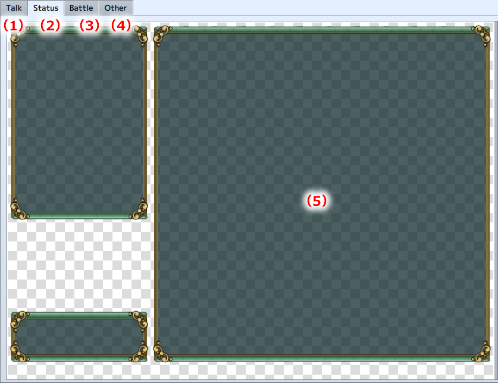

Scene Selection
Select the scene to be applied to the window.
Scene Tab
Select the scene to be applied during gameplay. Selected parts will be displayed in the center Preview Area.

- (1) Dialogue
- Used for dialogue windows.
- (2) Status
- Used for the Status Screen window.
- (3) Battle
- Used for the windows seen during battle.
- (4) Other
- Used for windows other than those described in (1), (2) and (3).
- (5) Preview Area
- Selected parts are previewed here.